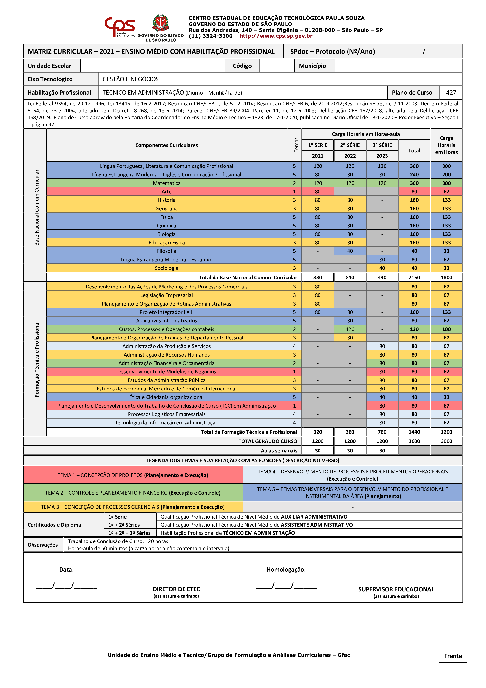

Técnico em Administração – Técnico integrado ao Ensino Médio
📕Descrição
Nesta modalidade de ensino, baseada na Lei nº 13.415/17, o aluno cursará o Ensino Médio estruturado em conjunto com a formação de Técnico em Administração, numa jornada de até 30 aulas semanais (até 6 aulas diárias), em cada uma das 3 séries. Ao final do curso, o aluno terá concluído o Ensino Médio e obterá, também, o diploma de Técnico em Administração, com validade nacional, de acordo com o perfil profissional a seguir: O TÉCNICO EM ADMINISTRAÇÃO é o profissional que participa da gestão dos recursos mercadológicos, humanos, financeiros, materiais e produtivos. Executa as rotinas administrativas, controla materiais, acompanha níveis de eficiência e produtividade, presta atendimento a clientes, e elabora fluxo de caixa. Trabalha em equipe, otimiza recursos, propõe inovações e adota postura ética na condução das relações e atividades.
📖Eixo-Tecnológico
GESTÃO E NEGÓCIOS
💼Onde trabalhar
Empresas privadas, seja de comércio, serviço ou indústria, órgãos públicos (prefeituras, secretarias de governo, ministérios do governo federal etc.) e ONGs.
📆Duração do Curso
6 semestres (3 anos).
🕗Horário de aula
Seg - Sex / 07:00-16:00.
Biblioteca

📋Matriz Curricular
